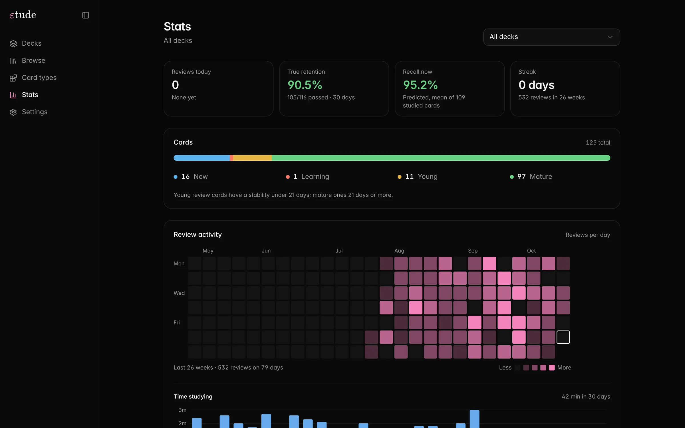
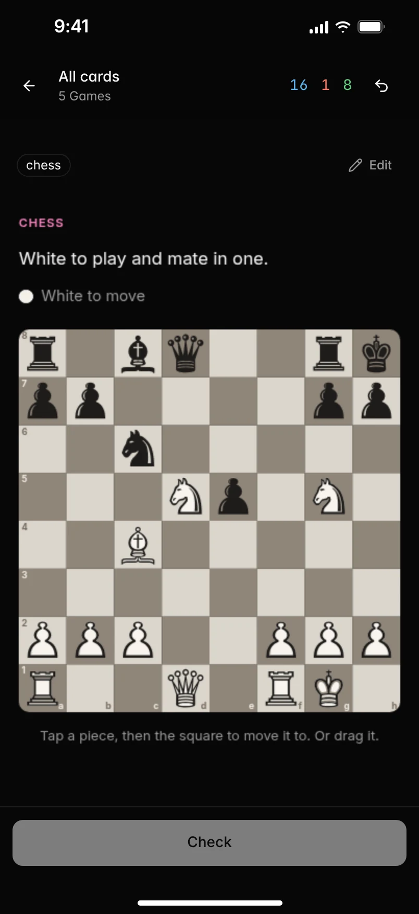
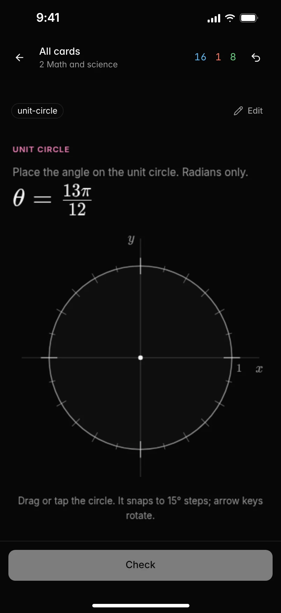

وِكَاء ما يُشَدُّ به الوعاء لِحفظ ما فيه · رِباطُ المحفوظ وإتقان المتشابهات
احفظ القرآن. وأتقن المتشابهات.
تطبيق مفتوح المصدر لحفظ القرآن الكريم وتثبيت المتشابهات اللفظية والعلوم النافعة. بطاقات ذكية بالرسم العثماني، خوارزمية FSRS-6 الأحدث عالمياً لمنع التفلت، وتقييم ذكي فوري يصحح إجابتك.
متشابهات القرآن بالرسم العثماني · خوارزمية FSRS-6 · استيراد آنكي كامل · مفتوح المصدر بالكامل · بياناتك ملكك على جهازك
Wikae Retain knowledge · Master Quranic Mutashabihat with smart spaced repetition
Memorize the Quran. Master the Mutashabihat.
An open-source platform for memorizing the Holy Quran, mastering similar verses (Mutashabihat), and retaining knowledge. Smart cards in Uthmani script, state-of-the-art FSRS-6 algorithm, and intelligent grading.
Quranic Mutashabihat in Uthmani script · FSRS-6 algorithm · Full Anki import · 100% open source · Offline-first & private
مقدمة مرئية عرض تقديمي سريع
Overture A brief walkthrough
متشابهات القرآن الكريم رِباط المحفوظ بدقة الحرف والآية
Quranic Mutashabihat Pivotal context and verse distinction
لا تفلت للمحفوظ بعد اليوم: إتقان أدق الفروق اللفظية.
نظام متقدم يجمع بين السياق البلاغي، وضوابط التدرج والتنكير والتعريف، وخوارزمية التكرار المتباعد FSRS-6 لترسيخ مواضع المتشابهات في الذاكرة دون خلط أو تردد.
Retain every verse: master the subtlest verbal distinctions.
An advanced system combining rhetorical context, grammatical rules (definiteness, precedence), and the FSRS-6 spaced repetition algorithm to anchor similar verses without confusion.
وَإِذْ قَالَ إِبْرَٰهِـۧمُ رَبِّ ٱجْعَلْ هَـٰذَا بَلَدًا ءَامِنًا وَٱرْزُقْ أَهْلَهُۥ مِنَ ٱلثَّمَرَٰتِ
وَإِذْ قَالَ إِبْرَٰهِيمُ رَبِّ ٱجْعَلْ هَـٰذَا ٱلْبَلَدَ ءَامِنًا وَٱجْنُبْنِى وَبَنِىَّ أَن نَّعْبُدَ ٱلْأَصْنَامَ
وَٱتَّقُوا۟ يَوْمًا لَّا تَجْزِى نَفْسٌ عَن نَّفْسٍ شَيْـًٔا وَلَا يُقْبَلُ مِنْهَا شَفَٰعَةٌ وَلَا يُؤْخَذُ مِنْهَا عَدْلٌ
وَٱتَّقُوا۟ يَوْمًا لَّا تَجْزِى نَفْسٌ عَن نَّفْسٍ شَيْـًٔا وَلَا يُقْبَلُ مِنْهَا عَدْلٌ وَلَا تَنفَعُهَا شَفَٰعَةٌ
إكمال المواضع الدقيقة
تدريب الذاكرة على الكلمة المحورية التي يقع عندها اللبس مع إبقاء سياق الآية الكريمة واضحاً ومضبوطاً.
التمييز الفوري بين السور
عرض الآيات المتشابهة واختبار استحضار موضعها في السورة المناسبة مع خيارات ذكية من السور الشقيقة.
الضبط بالقواعد البلاغية
كل بطاقة مزودة بضابط حفظ وقاعدة تفسيرية وسياقية تثبت المعنى في الذهن بوعي وفهم عميق.
مصحف المدينة بالرسم العثماني
نصوص الآيات القرآنية مستقاة بالكامل من مصحف مجمع الملك فهد لطباعة المصحف الشريف بالرسم العثماني المعتمد.
Pivotal Verse Completion
Train your recall on the exact pivot word where doubt arises while maintaining full verse context.
Surah Distinction
Encounter similar verses and identify the correct Surah with intelligent distractor choices.
Mnemonic & Context Rules
Every card includes interpretive context and memorization rules that anchor meaning with understanding.
King Fahd Complex Uthmani Script
Authenticated Quranic text directly sourced from the King Fahd Glorious Quran Printing Complex.
الرؤية والهدف مقدمة
Prelude The Vision
قال النبي ﷺ: «تَعَاهَدُوا هذا القُرْآنَ، فَوَالَّذِي نَفْسُ مُحَمَّدٍ بيَدِهِ لَهُوَ أَشَدُّ تَفَلُّتًا مِنَ الإِبِلِ في عُقُلِهَا». ومن هنا جاء اسم وِكَاء: وهو ما يُشدّ به الوعاء لِحفظ ما استُودِع فيه، ليكون رِباطاً لمحفوظ الحفّاظ وضابطاً لأدق المتشابهات.
أثبتت تقنيات التكرار المتباعد (Spaced Repetition) في تطبيقات مثل Anki فعاليتها الكبيرة، لكن الحفظ المتقن يحتاج إلى ما هو أبعد من مجرد بطاقة لها وجه وظهر. يحتاج الحافظ إلى التدرب على إكمال الآية، واستحضار اسم السورة، وضبط قواعد المتشابهات اللفظية، ومعرفة دقيقة برسم الكلمات.
وِكَاء صُمّم ليكون الأداة الأمثل لطلاب القرآن والعلوم الشرعية والمعرفية: خوارزمية FSRS-6 الأحدث عالمياً لحساب موعد المراجعة الدقيق قبل النسيان، مع الحفاظ الكامل على خصوصيتك واستقلالية بياناتك على جهازك دون إنترنت.
The Prophet ﷺ said: "Commit yourselves to this Quran, for by the One in Whose Hand is my soul, it slips away faster than untethered camels." Hence the name Wikae (وِكَاء): the bond used to fasten a vessel to secure its contents—designed to anchor Quranic memorization and master its subtlest verbal distinctions.
Spaced repetition in tools like Anki has proven invaluable, but mastering the Quran requires far more than two-sided flashcards. A reciter needs to practice pivotal completions, distinguish between sibling Surahs, and understand the rhetorical reasons behind each phrasing.
Wikae was crafted for Quran students and scholars of knowledge: powered by the state-of-the-art FSRS-6 algorithm to schedule reviews at the optimal moment before forgetting, fully offline, privacy-first, and completely open source.
البطاقات الذكية الأولى
Smart Cards No. 1
البطاقة برنامج متكامل وليست مجرد وجه وقفا.
في التطبيقات التقليدية تقلب البطاقة لترى الإجابة وتقيّم نفسك. في وِكَاء، البطاقة تتحقق من إجابتك، تضع لك خيارات عشوائية، أو تولّد مسائل وأرقاماً متجددة مع كل مراجعة.
Cards are programs, not index cards.
Traditional flashcards flip over so you can rate yourself. In Wikae, a card checks your answer, generates random distractors, or creates fresh numeric problems each review.
| الميزة | تطبيقات البطاقات التقليدية | وِكَاء |
|---|---|---|
| بنية البطاقة | وجه وظهر فقط | برنامج تفاعلي: قالب وشيفرة ومصحح ذكي |
| المتشابهات القرآنية | تكرار عادي دون سياق | إكمال محوري، تمييز السور، وقواعد ضبط بلاغية |
| طريقة التقييم | تقييم يدوي ذاتي | تقييم برمجي، ذكاء اصطناعي، أو تقييم هجين |
| خوارزمية التكرار | خوارزمية SM-2 عمرها 35 عاماً | خوارزمية FSRS-6 الأحدث والأدق عالمياً |
| موعد الختمة / الاختبار | تتجاهل موعد الاختبار | جدولة متقدمة تضمن مراجعة كل بطاقة قبل الموعد |
| استيراد آنكي (Anki) | غير مدعوم أو محدود | استيراد كامل لملفات .apkg بكامل سجل المراجعات |
| الخصوصية والأمان | تتطلب حسابات وسحابة | تعمل محلياً 100% على جهازك مفتوحة المصدر |
| Feature | Traditional Flashcards | Wikae |
|---|---|---|
| Card Architecture | Front and back only | Interactive program: template, logic & smart grader |
| Quranic Mutashabihat | Raw repetition without context | Pivotal completion, Surah distinction & rhetorical rules |
| Grading Method | Manual self-rating only | Script grading, AI evaluation, or hybrid |
| Repetition Algorithm | 35-year-old SM-2 | State-of-the-art FSRS-6 algorithm |
| Khatmah / Exam Deadlines | Ignores exam deadlines | Active scheduling guarantees review before your date |
| Anki Import | Unsupported or limited | Seamless .apkg import with full review history |
| Privacy & Security | Cloud accounts required | 100% offline-first, local and open source |
التقييم الذكي الثانية
Smart Grading No. 2
تصحيح فوري يناسب طبيعة كل سؤال.
لكل نوع بطاقة المصحح الأنسب له: التحقق التلقائي من الكلمات القرآنية، التدقيق في المعادلات الرياضية، أو تحليل الذكاء الاصطناعي للإجابات المفتوحة والمشروحة.
The right grader for each kind of question.
Different material needs different grading: instant Quranic word verification, mathematical equivalences, or AI evaluation for open conceptual answers.
selfتقييم ذاتي- للمراجعة السريعة: أظهر الإجابة واختر (مجدداً، صعب، جيد، سهل).
scriptتصحيح برمجي- تدقيق الكلمات القرآنية، الأرقام مع الوحدات، أو مطابقة النصوص بدقة.
aiتصحيح بالذكاء الاصطناعي- قراءة الإجابات المشروحة وشرح التجويد والتفسير وتقديم ملاحظات فورية.
hybridتقييم هجين- يتكفل البرنامج بالحالات الواضحة ويحيل التفاصيل الدقيقة للمصحح الذكي.
selfSelf-grading- For rapid recall: reveal the answer and choose (Again, Hard, Good, Easy).
scriptScript-graded- Deterministic verification for Quranic words, numeric expressions with units, and exact matches.
aiAI-graded- Evaluates written explanations, Tajweed nuances, and open-ended conceptual answers.
hybridHybrid- Deterministic test suites run first; borderline or complex subjective cases pass to AI.
الختمة ومواعيد الاختبار الثالثة
Deadlines & Khatmah No. 3
موعد الختمة أو الاختبار جزء أساسي من خطتك.
التكرار المتباعد المعتاد قد يجدول مراجعة بطاقة تتقنها إلى ما بعد موعد ختمتك أو اختبارك. في وِكَاء، عند تحديد موعد نهائي تُعاد جدولة المراجعات لتمر على كامل المحفوظ قبل اليوم المحدد.
Your exam or completion date is built into the schedule.
Ordinary spaced repetition might schedule a card you know well past your exam. In Wikae, a deadline pulls reviews forward so you see every card before test day.
حساب مباشر وحي في متصفحك عبر خوارزمية FSRS-6 وقاعدة المواعيد في وِكَاء، لضمان أعلى نسبة استحضار يوم العرض أو الاختبار.
Live simulation in your browser running ts-fsrs with Wikae's deadline cap rule, maximizing retention on your target date.
خوارزمية الجدولة FSRS-6
Scheduling Algorithm FSRS-6
النموذج العلمي الأقوى في قياس الذاكرة والنسيان.
تعتمد وِكَاء خوارزمية FSRS-6 الحديثة، المبنية على قياس الاستقرار (Stability) وصعوبة الاسترجاع (Difficulty)، لتمنحك فترات مراجعة مثالية توفر 30% من وقت المراجعة مقارنة بنظام Anki القديم.
The modern scientific model of memory and forgetting.
Wikae is built on FSRS-6, modeling memory via Stability and Difficulty, providing optimal review intervals that save 30% of study time compared to legacy SM-2.
مقارنة فترات المراجعة لبطاقة على مدار ستة أسابيع، مع محاكاة الخطأ.
One card over six weeks under four schedulers, with a simulated lapse.
مقارنة حية في متصفحك بين خوارزمية FSRS-6 وخوارزميات الصناديق والتدريب المكثف.
Live comparison in your browser between FSRS-6, Leitner boxes, and drill scheduling.
لوحة إحصائيات حية متكاملة داخل التطبيق.
Integrated live statistics dashboard inside the app.
إحصائيات الحفظ الرابعة
Retention Statistics No. 4
اعرف ما ثبت في صدرك وما أوشك على التفلّت.
تغذي كل مراجعة نموذج FSRS الرياضي، لتعرف بدقة نسبة حفظك الحالية، وأي السور أو الوسوم تحتاج مراجعة عاجلة، وساعات اليوم الأفضل لتركيزك.
Know what is firm in memory and what is slipping away.
Every review feeds the FSRS model, showing your current true retention, which Surahs or topics need review, and your peak focus hours.
سطر الأوامر والأتمتة الخامسة
CLI & Automation No. 5
تحكم كامل وسهل عبر سطر الأوامر (CLI).
كل عملية متاحة في واجهة التطبيق تقابلها أوامر CLI سريعة تنتج مخرجات JSON دقيقة، لتمكين الأتمتة وإنشاء الحزم ومزامنة البيانات بسلاسة.
Full control via the command line interface.
Everything the app can do is backed by CLI commands with clean JSON output, enabling scripts, automated deck authoring, and seamless integrations.
- ملف موحد لكل حزمة
- تحمل الحزمة بطاقاتها وقوالبها ووسومها في ملف JSON أنيق، مع إمكانية التحديث المباشر دون فقدان سجل الحفظ.
- أكثر من 100 أمر منظم
- أمر
wikae commandsيعرض قائمة الأوامر الكاملة مع الشرح والأمثلة والمعاملات. - مهارة مدمجة للأدوات والوكلاء
- يأتي المشروع بملف SKILL.md لتمكين أدوات الذكاء الاصطناعي من إنشاء الحزم واختبارك وإدارة مواعيدك.
- One file per pack
- A clean JSON document holds cards, types, assets and metadata, updated cleanly without losing review state.
- Over 100 structured commands
- The CLI provides a full command reference with arguments, flags, and stable JSON output.
- Built-in AI agent skill
- Ships with SKILL.md so coding agents and LLMs can author decks, quiz you, and manage deadlines.
جلسة سطر الأوامرTerminal session أوامر حقيقية مسجلةReal recorded session
استيراد آنكي انتقال سلس
Anki Import Seamless migration
انقل حزمك من Anki مع كامل سجل المراجعات.
استورد ملفات .apkg أو مجموعات .colpkg وتابع حفظك دون أن تبدأ من الصفر. تنتقل أنواع البطاقات والتنسيقات والوسائط وسجل المراجعات وخوارزمية الذاكرة مباشرة.
Bring your Anki decks over with full review history.
Import .apkg or .colpkg files without starting over. Note types, custom styles, audio, media, and past review history carry over directly.
- أنواع الملاحظات
- تتحول إلى أنواع بطاقات مستقلة بكامل قوالبها وتنسيقاتها
- الملاحظات والبطاقات
- تنتقل كعناصر وبطاقات متوافقة مع الحفظ التفاعلي
- سجل المراجعات
- يحتفظ بكل مراجعة قمت بها بتاريخها وتقييمها الأصلي
- حالة FSRS
- تنتقل مؤشرات الاستقرار والصعوبة كما هي لمواصلة التدريب
- الوسائط والملفات الصوتية
- تُنسخ الصور والتسجيلات والخطوط مباشرة في مجموعتك
- الحزم والوسوم الهرمية
- تحتفظ بهيكلية
::وتصنيفاتها المعتادة
- Note types
- Become standalone card types with their own templates and styles
- Notes & cards
- Transfer as native items and interactive cards
- Review history
- Preserves every past review, timestamp, and rating
- FSRS state
- Stability and difficulty ratings carry over directly
- Media & audio
- Audio recitations, images, and fonts copy to your library
- Decks & tags
- Hierarchical
::structures and tags remain intact
$ wikae anki import "Quran-Juz-Amma.apkg" 564 notes · 1120 cards · 320 media files
أو عبر زر استيراد في صفحة الحزم داخل التطبيق. إعادة الاستيراد لاحقاً تحدّث البيانات دون تكرار أو مساس بتقدمك المحرز في وِكَاء.
Or use the Import button on the Decks page. Re-importing later updates in place without duplicating cards or losing progress made in Wikae.

حزم تفاعلية تجارب حية
Interactive Decks Live in-page demos
بطاقات تتجاوز حدود السؤال والجواب التقليدي.
تفاعل مباشر مع الخرائط، والجداول الدورية، والتطبيقات التفاعلية. جرب البطاقات الحقيقية مباشرة في متصفحك.
Cards that go beyond simple flashcards.
Interact directly with maps, the periodic table, and speed exercises. Experience real card types right here in your browser.
متجر الحزم المستودع المفتوح
The Market Open repository
حزم وبطاقات ومظاهر يشاركها الطلاب والمعلمون.
تصفح مستودع الحزم المفتوحة، وجرب أنواع البطاقات مباشرة قبل تثبيتها بنقرة واحدة، أو انشر حزمك الخاصة ليستفيد منها غيرك.
Decks, card types, and themes shared by the community.
Browse open packs, try card types live before installing with a single click, or publish your own creations.
واجهة هادئة السادسة
Calm Interface No. 6
تطبيق هادئ وسريع يركز على لوحة المفاتيح والإنتاجية.
استخدمه عبر تطبيق سطح المكتب المستقل، أو من المتصفح، أو من هاتفك المحمول عبر شبكتك المحلية. دون تسجيل أو إعلانات.
Quiet and fast, built around keyboard shortcuts and flow.
Use it as a native desktop application, in the browser, or on mobile over your local network. No accounts or ads.









البرمجة والتطوير السابعة
Open Types No. 7
كل نوع بطاقة هو مجلد شيفرات يمكنك قراءته وتعديله.
قالب HTML، وتنسيق CSS، وشيفرة JavaScript للبطاقة والمصحح. كافة البطاقات مكتوبة بهذه الطريقة الواضحة لتتمكن من إنشاء نوعك الخاص بسهولة.
Every card type is an open folder of code.
An HTML template, CSS styling, and JavaScript for the card view and its grader. Built cleanly so you can make your own.
معرض التمارين المكتبة الشاملة
Repertoire Card collection
طرق لا حصر لها للممارسة والتدريب.
كل نوع بطاقة مدمج يعمل هنا تماماً كما يعمل في التطبيق. اختر بطاقة، أجب عنها، واضغط على زر التحقق لترى تصحيحها الحي في متصفحك.
Countless ways to practice and test your knowledge.
Every built-in card type works here just like in the app. Pick one, answer it, and click Check for live grading.
مزايا متكاملة المرافقة
Accompaniment Everything included
كل ما يحتاجه الحافظ وطالب العلم في مكان واحد.
Everything a learner and reciter needs in one place.
- جدولة FSRS-6 الدقيقة
- خطوات تعلم ذكية، حدود يومية للمراجعات الجديدة، إخفاء البطاقات الشقيقة مؤقتاً، والتراجع الفوري.
- إعدادات هرمية متوارثة
- إعدادات حزمة القرآن تنطبق على الأجزاء والسور ما لم تُحدد خيارات خاصة لسورة معينة.
- لغة بحث وتصفية متقدمة
- أوامر مثل
deck:Quran is:dueللبحث والفرز السريع في الجلسات وسطر الأوامر. - إحصائيات وخرائط حرارية
- معدلات التذكر، خريطة الأيام والمراجعات، وتوقعات العبء حتى موعد الختمة.
- تطبيق هاتف وشبكة محلية
- واجهات مصممة للهواتف مع إمكانية الوصول من أجهزة منزلك عبر رمز وصول آمن.
- الوضع الفاتح والداكن
- مظاهر مدمجة مريحة للعين تدعم التبديل التلقائي بحسب تفضيل نظام التشغيل.
- أمان كامل وبيئة معزولة
- تعمل قوالب البطاقات في إطارات معزولة ومحمية لحفظ أمان جهازك وبياناتك.
- الذكاء الاصطناعي باختيارك
- معطل تماماً حتى تفعله باختيارك، مع إمكانية استخدام خوادم محلية مفتوحة المصدر.
- محرر متقدم للنصوص والرسم
- دعم التنسيق المباشر والرموز الرياضية وتظليل لغات البرمجة المختلفة.
- Precise FSRS-6 scheduler
- Custom learning steps, configurable daily limits, sibling burying, and one-key undo.
- Inherited settings
- Deck settings and exam deadlines inherit down the deck tree, with per-deck overrides when you need them.
- Search language
- Queries like
deck:Quran is:duefilter study sessions, the card browser, and CLI queries. - Retention heatmap
- True retention rates, daily review calendar, and workload projections up to your exam.
- Phone app & local network
- Touch-tailored UI accessible from your phone on your home network via secure one-time tokens.
- Light and dark themes
- Carefully calibrated themes with automatic OS preference detection.
- Sandboxed cards
- Cards run inside sandboxed iframes without network access or ambient authority.
- Optional AI
- Disabled by default until configured with your own API key or local LLM server.
- Rich formatting
- Built-in Markdown, KaTeX math typesetting, and syntax highlighting.
وِكَاء · رِباطُ المحفوظ وإتقان المتشابهات.
مجاني ومفتوح المصدر بالكامل تحت رخصة AGPL-3.0. يعمل بالكامل على جهازك وبياناتك في أمان تام.
Wikae · Retain knowledge and master Mutashabihat.
Free and open source under AGPL-3.0. Runs entirely offline on your machine with zero tracking.